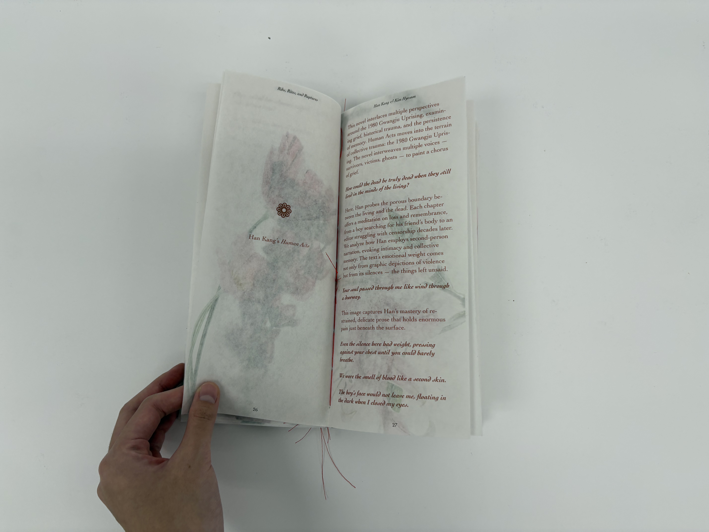
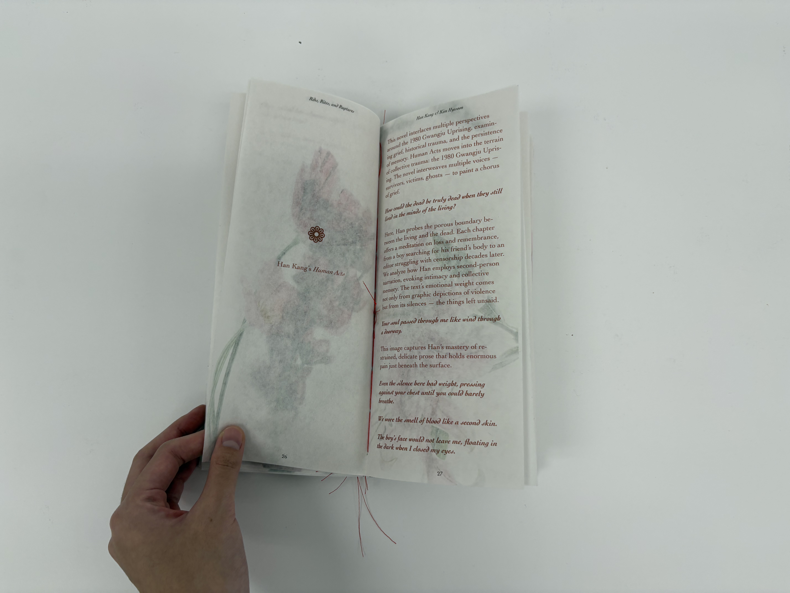

Ribs, Rites, Ruptures
Made with Adobe Indesign, Bound with Coptic Binding, Printed on Butcher Paper
3.5"x7"
Ribs, Rites, and Ruptures is a book about Korean women writers, memory, the body, and resistance. The design reflects these themes through both material and form. The book is bound with red coptic stitching, showing along the spine like flower petals. The red thread represents beauty, pain, and the act of holding things together—just like the women in the stories and poems. It also echoes the blood and rebellion found in the work of Korean poets like Kim Hyesoon, whose writing is raw, surreal, and powerful. The book is made from butcher paper, a soft, semi-transparent material. It feels fragile, like skin or memory, and allows hints of what’s inside to show through. This layered look mirrors the emotional and historical depth in the work of writers like Han Kang, who writes with quiet intensity and silence. The book honors the strength and transformation found in contemporary Korean poetry and fiction. It is made to feel like a ritual: stitched by hand, gentle but fierce, full of layers, silence, and life.